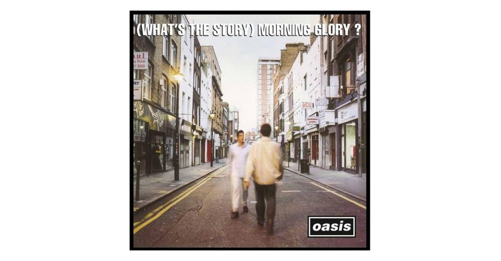
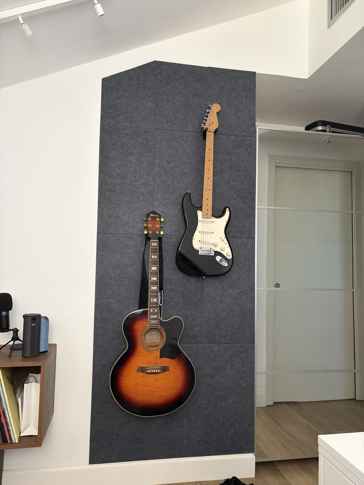
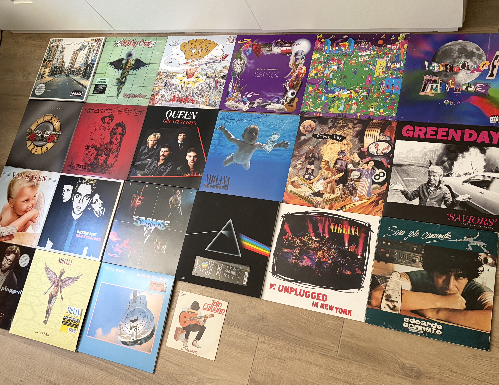

Hobby & Passioni
La mia passione per la musica è iniziata quando ero molto giovane. Da allora, la musica è sempre stata una parte fondamentale della mia vita, accompagnandomi nei momenti di gioia, riflessione e crescita personale.
Per la mia passione per la musica devo ringraziare mio padre, visto che ha molto insistito per farmi crescere con ottima cultura musicale facendomi ascoltare tantissimi generi diversi, dal rock al rap, passando per il pop e la musica classica.
Grazie a lui ho potuto scoprire tantissimi artisti e generi diversi che mi hanno fatto innamorare della musica ma nessun genere ha avuto effetto come ha avuto il rock anni '80/90. La mia passione per il rock è nata grazie al brano "Morning Glory" degli Oasis, che ho ascoltato per la prima volta quando avevo circa 3 anni, e da quel momento è stato amore a prima vista. Ogni volta che ascolto un pezzo di quel genere riesco a comprenderne il significato e soprattutto mi da i brividi, è una sensazione che non riesco a spiegare a parole ma che mi fa sentire vivo e mi fa capire quanto la musica sia importante per me.


Grazie a gruppi come gli Oasis, i Nirvana, i Green Day e i Guns N' Roses e ai "big" del settore tra cui Slash, Eddie Van Halen, Mark Knopfler e Brian May, ho scoperto la chitarra, strumento che suono da ormai almeno 10 anni e che mi ha permesso di esprimere me stesso in modo ancora più profondo. Mi è bastato il primo accordo ben riuscito per capire che quello strumento sarebbe stato una delle mie più grandi passioni, e da allora non ho mai smesso di suonare, imparare nuovi brani e sperimentare con nuovi generi.
Con il tempo ho iniziato a scoprire altri strumenti che mi hanno permesso di ampliare ulteriormente le mie capacità musicali e di esplorare nuovi orizzonti sonori. Fortunatamente grazie ai miei parenti, che erano e sono tutt'ora musicisti, ho avuto casa sempre piena di strumenti musicali di ogni tipo e perciò ho sempre avuto l'imbarazzo della scelta su quale strumento suonare, e questo mi ha permesso di scoprire il basso, che suono da circa 5 anni, e il pianoforte, che suono da circa 1 anno.
Verso i 16 anni circa, ho iniziato a sentire il bisogno di avere un'esperienza più tangibile con la musica, qualcosa che andasse oltre l'ascolto digitale. Così, spinto dalla curiosità e dalla voglia di collezionare qualcosa di fisico, ho iniziato a comprare vinili dei miei artisti preferiti.
Il tutto è partito grazie al regalo per i miei 16 anni che mi hanno fatto i miei amici che, sapendo di voler iniziare questa collezione, mi hanno regalato il vinile del 30esimo anniversario di "In Utero" e "Unplugged" dei Nirvana, i miei album preferiti del tempo. Da quel giorno ho iniziato a comprare vinili di ogni tipo, dai miei artisti preferiti a quelli che mi incuriosivano, e la mia collezione è cresciuta rapidamente, diventando una parte importante della mia esperienza musicale. Ad oggi, i miei vinili preferiti sono i tre inclusi nell'edizione del 30esimo anniversario di "What's the Story Morning Glory" degli Oasis, che considero uno dei migliori album di sempre, e "Dookie" dei Green Day, grandi album iconici della scena rock degli anni '90.
